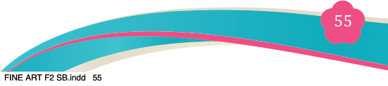
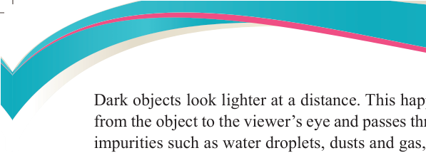
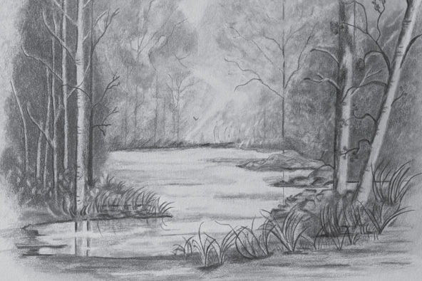

Dark objects look lighter at a distance. This happens because when light travels

from the object to the viewer’s eye and passes through a layer of air that contains impurities such as water droplets, dusts and gas, unclear layer of air reduces the
amount of light and affects it. This type of perspective is very common in painting
and drawing. When using black and white, the value of shade will appear darker when they are close and lighter when they are far away.
Elements of atmospheric perspective
An atmospheric perspective guides artists to draw in a way that they show effects
of atmosphere and create a realistic work. This part will describe the elements that
are used in the process of creating a composition with the effects of atmosphere.
Atmospheric perspective makes distant object’s colour appear less vibrant or dull.
In case of drawing, it makes the tones of distant object lighter and the closer ones
darker. Observe Figure 3.25.

Figure 3.25: Character of tonal values in atmospheric perspective drawing
Source: https://www.skillshare.com/en/projects/Graphite-Powder-and-pencil/404899
(i) Contrast
Atmospheric perspective is the difference in colour and value between layers
of a composition. It has a tendency of giving more weight to the one part of a drawing and less weight on the others based on what is close to and far from the viewer. Sometimes one can feel like the rule of atmospheric perspective was not observed. For example, a distant huge rain cloud will appear darker than the front sky with no rain clouds (Consider, Figure 3.26).
Depending on distance, atmospheric perspective tends to show sharpness in